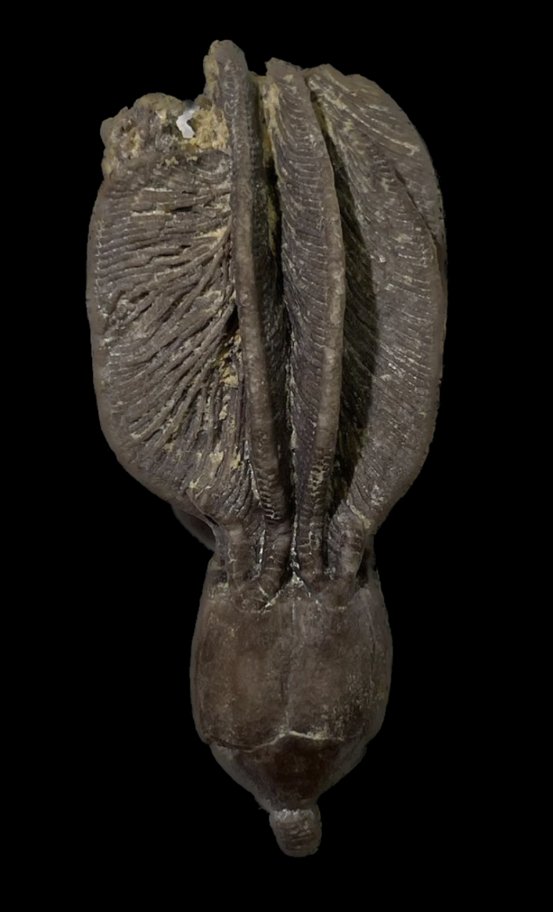
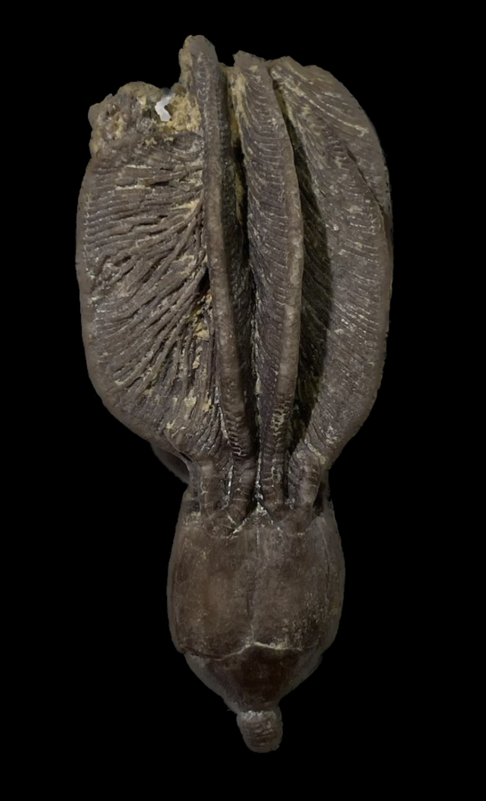

Strimplecrinus (Dichocrinus) inornatus
• Mississippian
• Hampton Formation/Maynes Creek Formation
• LeGrand, Iowa, USA
Size: 4.5 cm crown
One of the most common constituents of the famous Le Grand crinoid fauna, Strimplecrinus inornatus (formerly Dichocrinus inornatus) has large, simple calyx plates deceptively organized like a disparid, but is actually a monobathrid camerate. The species name is presumably in reference to its plain, unornamented calyx, and its anal plate is large and nearly identical in size and shape to the radials. As with many Le Grand crinoids, this crinoid exhibits consistent species-specific coloration; in this case always a rich dark chocolate-brown. This is a particularly fine inflated example with beautifully-pinnulated arms.
 
